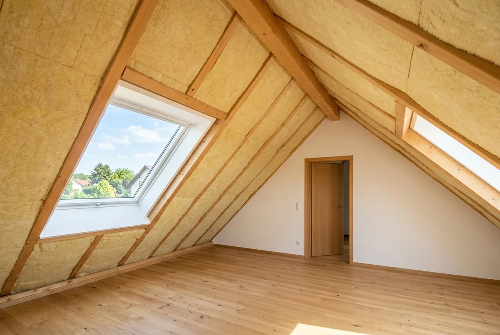
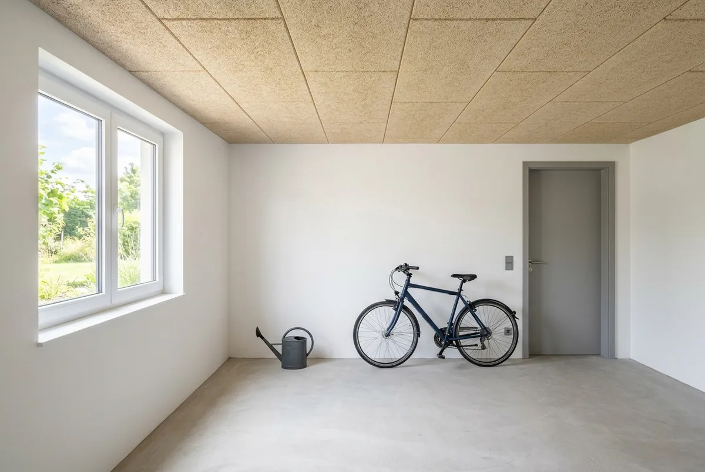
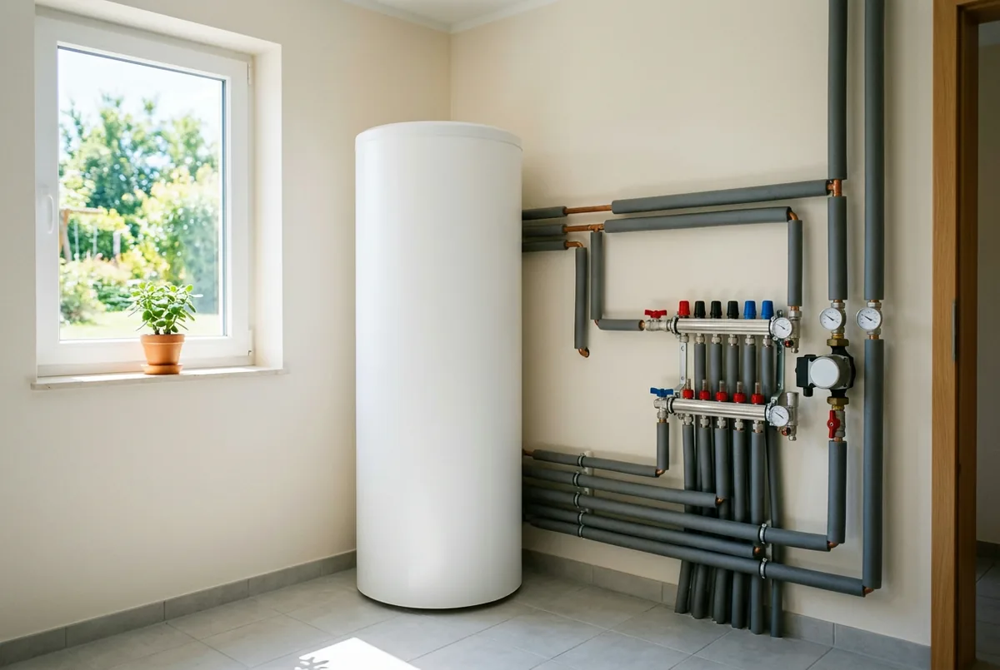

Inhaltsverzeichnis
- Welche Vorarbeiten lohnen sich?
- Block 1: Lohnt sich fast immer
- Warum die Kostenspannen so weit sind
- Block 2: Hängt vom Einzelfall ab
- Block 3: Lohnt sich meist nicht
- Alle Vorarbeiten im Vergleich
- Die richtige Reihenfolge
- Förderung: BAFA und KfW
- Der teuerste Denkfehler
- Fazit und Handlungsempfehlung
- Kurz und direkt beantwortet
- Häufige Fragen
Das Wichtigste in Kürze
- Vier Maßnahmen zuerst: raumweise Heizlastberechnung, hydraulischer Abgleich, Dämmung der obersten Geschossdecke, Dämmung der Kellerdecke. Sie lohnen sich fast unabhängig vom Gebäude.
- Zielgröße: Ein Gebäude gilt laut Verbraucherzentrale (Stand 25. März 2026) als wärmepumpentauglich, wenn die Vorlauftemperatur ganzjährig unter 55 Grad Celsius bleibt.
- Belegte Kosten: oberste Geschossdecke 5–35 €/m² (co2online, 4. September 2025), Kellerdecke 18–30 €/m² von unten (co2online, 17. Januar 2024), hydraulischer Abgleich 600–1.200 € (Verbraucherzentrale, 10. März 2026).
- Nicht seriös bezifferbar: Heizlastberechnung, Zählerschrank und Drehstromanschluss, Heizkörpertausch je Stück, für diese Positionen liegen uns keine neutralen, aktuellen Quellen vor.
- Förderung getrennt: Dämmung läuft über das BAFA (15 %, Höchstkosten 30.000 € je erster Wohneinheit), der Heizungstausch über die KfW 458.
- Der teuerste Fehler: die Wärmepumpe wegen geplanter Dämmung um Jahre verschieben. Die Förderkonditionen für den Heizungstausch sinken ab dem 1. Februar 2027 halbjährlich.
Welche Vorarbeiten lohnen sich vor dem Einbau einer Wärmepumpe?
Vier Vorarbeiten lohnen sich vor dem Einbau einer Wärmepumpe fast immer: eine raumweise Heizlastberechnung, der hydraulische Abgleich, die Dämmung der obersten Geschossdecke und die Dämmung der Kellerdecke. Alles Weitere (einzelne Heizkörper, Fassade, Fenster, Zählerplatz) ist eine Einzelfallentscheidung und keine Grundvoraussetzung.
Die Größe, an der sich jede dieser Maßnahmen messen lassen muss, ist die Vorlauftemperatur. Die Vorlauftemperatur ist die Temperatur des Heizwassers, das den Wärmeerzeuger in Richtung Heizflächen verlässt. Die Verbraucherzentrale nennt mit Stand 25. März 2026 die Faustregel, dass ein Gebäude als wärmepumpengeeignet gilt, wenn die Vorlauftemperatur ganzjährig unter 55 Grad Celsius bleibt. Maßnahmen, die diesen Wert senken, zahlen direkt auf die Effizienz ein. Maßnahmen, die ihn nicht senken, müssen sich anders begründen.
Eine Abgrenzung vorweg: Die grundsätzliche Frage, ob man zuerst dämmt oder zuerst die Heizung tauscht, behandeln wir ausführlich in unserem Beitrag Erst dämmen oder erst Wärmepumpe? Die Sanierungsreihenfolge im Altbau. Hier geht es konkreter: Welche einzelne Vorarbeit bringt wie viel, was kostet sie belegbar, und in welcher Reihenfolge entscheiden Sie darüber. Ob eine Wärmepumpe im eigenen Haus überhaupt sinnvoll ist, klärt unser Überblick Wärmepumpe im Altbau: wann sie sich lohnt und wann nicht.
Denn eine Wärmepumpe scheitert im Altbau selten am Gebäude als Ganzem, sondern an einzelnen Räumen mit zu kleinen Heizflächen und an einer Anlage, die nie eingeregelt wurde. Deshalb ist die pauschale Antwort „erst alles sanieren" so teuer.
Block 1: Diese vier Vorarbeiten lohnen sich fast immer
Diese vier Maßnahmen lohnen sich fast unabhängig vom Gebäudezustand, weil sie entweder die Entscheidungsgrundlage liefern oder die Heizlast zu niedrigen Quadratmeterpreisen senken.
1. Raumweise Heizlastberechnung
Die Heizlastberechnung nach DIN EN 12831 ermittelt, wie viel Wärmeleistung in Kilowatt jeder einzelne Raum bei der örtlichen Auslegungstemperatur benötigt. Sie ist die Grundlage für die Dimensionierung der Wärmepumpe und für jede Aussage darüber, ob ein Heizkörper ausreicht. Die Verbraucherzentrale Saarland weist in ihrer Pressemeldung „Falsche Dimensionierung von Wärmepumpen kann teuer werden" vom 24. September 2025 darauf hin, dass eine falsche Auslegung zu Taktbetrieb, Effizienzverlust und verkürzter Lebensdauer führt, und dass die Heizlastberechnung als förderfähige Planungsleistung gilt.
Eine belastbare Kostenspanne für die Heizlastberechnung nennen wir bewusst nicht: Die neutralen Quellen führen keine, und Zahlen von Anbieterseiten sind kein Beleg. Im Verhältnis zu den Folgekosten einer zu groß gewählten Anlage ist es dennoch die günstigste Absicherung im gesamten Projekt.
2. Hydraulischer Abgleich
Der hydraulische Abgleich ist die rechnerische und ventilseitige Einstellung, mit der jeder Heizkörper genau die Wassermenge bekommt, die er für seine Raumheizlast braucht. Die Verbraucherzentrale bezeichnet ihn in ihrem Beitrag „Hydraulischer Abgleich: So wird Ihre Heizung effizienter" mit Stand 10. März 2026 als wirksames Verfahren und nennt eine Senkung des Energieverbrauchs um 5 bis 15 Prozent. Wie viel davon bei Ihnen ankommt, hängt vom Ausgangszustand ab. Eine Einsparzusage ist das ausdrücklich nicht.
Die Kosten nennt dieselbe Quelle mit 600 bis 1.200 Euro. Für eine Wärmepumpe ist der Abgleich mehr als eine Optimierung: Erst er macht es möglich, die Heizkurve abzusenken, ohne dass einzelne Räume auskühlen, und die abgesenkte Heizkurve ist der eigentliche Effizienzhebel.
3. Dämmung der obersten Geschossdecke
Die Dämmung der obersten Geschossdecke ist in den meisten Altbauten die günstigste Dämmmaßnahme überhaupt. co2online nennt mit Stand 4. September 2025 eine Spanne von etwa 5 bis 35 Euro pro Quadratmeter, eine Einsparung von rund 7 Prozent der Heizenergie und eine Amortisation nach etwa 10 bis 15 Jahren; die Maßnahme gilt dort als eine der günstigsten und effizientesten Dämmmaßnahmen. Der Grund ist banal: Warme Luft steigt, die Fläche ist meist frei zugänglich, es braucht kein Gerüst.
4. Dämmung der Kellerdecke
Die Kellerdeckendämmung ist die zweite Maßnahme mit sehr gutem Verhältnis von Aufwand zu Wirkung. co2online nennt mit Stand 17. Januar 2024 18 bis 30 Euro pro Quadratmeter für die Ausführung von unten beziehungsweise als Einblasdämmung, 50 bis 150 Euro pro Quadratmeter bei Ausführung von oben inklusive neuem Bodenbelag, sowie eine Einsparung von rund 5 Prozent der Heizkosten. Sie zählt dort zu den rentabelsten Dämmmaßnahmen. Nebeneffekt: Die Fußböden im Erdgeschoss werden spürbar wärmer.

Warum die Kostenspannen bei der Dämmung so weit auseinanderliegen
Die Spannen liegen so weit auseinander, weil sie unterschiedliche Bauweisen, Zugänglichkeiten und Ausführungsarten in eine einzige Zahl pressen, nicht, weil die Preise beliebig wären. Wer die Treiber kennt, kann sein eigenes Gebäude ziemlich genau in der Spanne verorten.
Bei der obersten Geschossdecke ist der wichtigste Treiber die Frage, ob die Fläche begehbar bleiben soll. co2online differenziert zum Stand 4. September 2025: nicht begehbar etwa 20 bis 35 Euro pro Quadratmeter, Einblasdämmung in eine Holzbalkendecke etwa 25 bis 50 Euro, begehbare Ausführung mit belastbarem Aufbau etwa 40 bis 80 Euro. Wer den Dachboden weiter als Abstellfläche nutzen will, landet also oberhalb der oft zitierten Untergrenze.
Bei der Kellerdecke entscheidet die Richtung. Von unten wird lediglich Dämmstoff an die Decke geklebt oder gedübelt: wenig Aufwand, entsprechend die 18 bis 30 Euro pro Quadratmeter. Von oben bedeutet: Bodenaufbau raus, Dämmung rein, Estrich und Belag neu, daher die 50 bis 150 Euro. Der Unterschied liegt nicht im Ergebnis, sondern in der Baustelle.
Drei weitere Faktoren wirken auf beide Maßnahmen: die geforderte Dämmstoffdicke, der Zustand der Fläche (Rohrleitungen und Einbauten kosten Arbeitszeit) und die Losgröße. 40 Quadratmeter Kellerdecke sind pro Quadratmeter teurer als 140. Hinzu kommen unterschiedliche Erhebungszeitpunkte: Januar 2024 für die Kellerdecke, September 2025 für die oberste Geschossdecke.
Block 2: Diese Vorarbeiten hängen vom Einzelfall ab
Vier Maßnahmen lassen sich nicht pauschal empfehlen oder ablehnen. Sie hängen an Zahlen, die erst die Heizlastberechnung liefert, oder an baulichen Randbedingungen.
Heizkörpertausch in einzelnen Räumen
Ob einzelne Heizkörper zu klein sind, ist eine Frage pro Raum, nicht pro Haus. Die Verbraucherzentrale NRW beschreibt in ihrem Beitrag „Wärmepumpe statt Ölheizung, da braucht's doch keine Wärmedämmung, oder?" (die Seite trägt kein Veröffentlichungsdatum), dass kleine, alte Heizkörper hohe Vorlauftemperaturen erfordern und Luft-Wärmepumpen in Effizienz und Geräuschentwicklung überfordern können. Die dort genannte Lösung ist die gezielte Vergrößerung einzelner Heizkörper, nicht die Umstellung des ganzen Hauses auf Fußbodenheizung. Wie Sie die betroffenen Räume erkennen, zeigen wir in Heizkörper tauschen oder behalten? und in Wärmepumpe im Altbau ohne Fußbodenheizung.
Fassadendämmung
Die Fassadendämmung wirkt von allen Dämmmaßnahmen am stärksten auf die Heizlast, ist aber auch die teuerste. co2online empfiehlt in „Darum sind Dämmung und Wärmepumpen das Traumpaar" vom 18. Dezember 2025 die Reihenfolge Dach beziehungsweise oberste Geschossdecke, dann Fassade, dann Fußboden, und danach die Wärmepumpe; zugleich weist der Beitrag darauf hin, dass Einzelmaßnahmen förderfähig sind und keine Vollsanierung Voraussetzung ist. Eine belastbare Kostenspanne führen wir hier nicht, weil sie in unseren Quellen nicht mit vergleichbarem Stand vorliegt. Praktisch entscheidend: Steht ohnehin ein Gerüst für Putz- oder Malerarbeiten, sinkt der Mehraufwand deutlich. Bei Denkmalschutz oder in Erhaltungsgebieten kann eine Außendämmung eingeschränkt sein. Das ist vorab mit der zuständigen Behörde zu klären. Dieser Beitrag ersetzt keine Rechtsberatung im Einzelfall.
Fenstertausch
Neue Fenster sind sinnvoll, wenn die alten defekt, undicht oder einfach verglast sind, aber sie sind kein Selbstzweck vor der Wärmepumpe. Die Verbraucherzentrale NRW weist darauf hin, dass ein Fenstertausch als isolierte Einzelmaßnahme, also ohne begleitende Dämmung und ohne Lüftungskonzept, das Risiko für Feuchte und Schimmel erhöhen kann: Das neue, dichte Fenster ist dann nicht mehr die kälteste Fläche im Raum, die Feuchte schlägt sich an den ungedämmten Außenwandecken nieder.
Zählerplatz und Stromanschluss
Ob Zählerschrank und Hausanschluss für eine Wärmepumpe ausreichen, klärt der Elektrofachbetrieb mit dem Netzbetreiber: ein technischer Punkt, kein Ausschlusskriterium. Nach der Richtlinie BEG EM vom 17. Juli 2026 muss eine geförderte Wärmepumpe über eine digitale Schnittstelle für die netzorientierte Steuerung nach § 14a EnWG verfügen; die Anmeldung als steuerbare Verbrauchseinrichtung gehört damit ohnehin zum Projekt. Eine belastbare Kostenspanne für Zählerschrank-Anpassung oder Drehstromanschluss nennen wir nicht: Dazu liegen keine neutralen, aktuellen Quellen vor, sondern nur Anbieterangaben.
Welche Vorarbeit lohnt sich in Ihrem Haus wirklich?
Wir rechnen die Heizlast raumweise und sagen Ihnen konkret, welche Maßnahme die Vorlauftemperatur senkt, und welche Sie sich sparen können.
Kostenlose Erstberatung sichernBlock 3: Diese Vorarbeiten lohnen sich meist nicht, nur um die Wärmepumpe vorzubereiten
Drei Maßnahmen tauchen in Angeboten und Ratgebern immer wieder auf, obwohl sie sich allein mit der geplanten Wärmepumpe nicht begründen lassen. Aus anderen Gründen können sie richtig sein, als Vorarbeit für die Wärmepumpe sind sie es meist nicht.
Der pauschale Komplett-Heizkörpertausch
Alle Heizkörper vorsorglich zu tauschen, ist fast immer teurer als nötig. Die Verbraucherzentrale NRW verweist ausdrücklich auf die Option, nur einzelne, zu kleine Heizkörper gezielt zu vergrößern. In der Praxis sind es meist wenige Räume, häufig das Bad und ein Zimmer mit nachträglich verkleinertem Heizkörper, die die nötige Vorlauftemperatur des gesamten Hauses nach oben ziehen. Welche das sind, sagt die raumweise Heizlastberechnung im Vergleich mit der vorhandenen Heizkörperleistung.
Der Fenstertausch allein wegen der Wärmepumpe
Ein kompletter Fenstertausch ist keine pauschale Voraussetzung für eine Wärmepumpe. Fenster machen in einem typischen Altbau nur einen Teil der Hüllfläche aus. Kommt das Schimmelrisiko bei isolierter Ausführung hinzu, das die Verbraucherzentrale NRW beschreibt, ist der Fenstertausch als reine Wärmepumpen-Vorbereitung selten die richtige Priorität. Anders sieht es aus, wenn die Fenster ohnehin am Ende ihrer Lebensdauer sind. Dann ist es eine Instandhaltungsentscheidung, die man mit einer Dämmmaßnahme und einem Lüftungskonzept zusammen plant.
Der überdimensionierte Pufferspeicher
Ein Pufferspeicher ist ein Wasserspeicher im Heizkreis, der Wärme zwischenlagert. Der Bundesverband Wärmepumpe beschreibt in einer Expertenantwort zur Frage „Wozu brauche ich einen Pufferspeicher?" (die Seite trägt kein erkennbares Datum), dass ein Pufferspeicher vor allem bei Wärmepumpen mit ungeregeltem, also nicht drehzahlgeregeltem Verdichter nötig ist, um Kurztaktung auszugleichen, und um Sperrzeiten des Energieversorgers von bis zu zwei Stunden zu überbrücken.
Daraus lässt sich als fachliche Einordnung, nicht als belegte Regel, ableiten: Bei modernen, drehzahlgeregelten Geräten fällt das erste Argument weitgehend weg, das zweite hängt am Tarif und an der Netzsituation. Ein großzügig dimensionierter Pufferspeicher „zur Sicherheit" kostet Aufstellfläche und Bereitschaftsverluste. Ob und in welcher Größe ein Puffer sinnvoll ist, gehört deshalb in die Anlagenplanung, nicht in die Standardausstattung eines Angebots.
Alle Vorarbeiten im Vergleich: lohnt sich, wirkt wie, kostet was
Die Tabelle fasst die zehn üblichen Vorarbeiten zusammen. Wo keine neutrale, aktuelle Quelle eine Kostenspanne nennt, steht das ausdrücklich so da. Geschätzte Zahlen wären hier wertlos.
| Maßnahme | Lohnt sich? | Wirkung auf die Vorlauftemperatur | Belegbare Kosten | Förderung |
|---|---|---|---|---|
| Raumweise Heizlastberechnung | Fast immer. Sie ist die Entscheidungsgrundlage | Indirekt: sie zeigt, welche Maßnahme die Temperatur senkt | Nicht belastbar bezifferbar | Planungsleistungen werden als Fachplanung und Baubegleitung mit 50 % gefördert (BAFA, Nr. 5.5 der Richtlinie BEG EM). Ob die Heizlastberechnung darunterfällt, vor Vertragsschluss klären. |
| Hydraulischer Abgleich | Fast immer | Stark: erst er erlaubt eine dauerhaft abgesenkte Heizkurve | 600–1.200 € (Verbraucherzentrale, 10.03.2026) | Heizungsoptimierung: 15 % (BAFA, Nr. 5.4 a) |
| Dämmung oberste Geschossdecke | Fast immer | Deutlich, senkt die Heizlast der obersten Räume | 5–35 €/m² (co2online, 04.09.2025) | Dämmung: 15 % (BAFA, Nr. 5.1 a) |
| Kellerdeckendämmung | Fast immer | Moderat, verbessert zusätzlich den Fußbodenkomfort | 18–30 €/m² von unten, 50–150 €/m² von oben (co2online, 17.01.2024) | Dämmung: 15 % (BAFA, Nr. 5.1 a) |
| Einzelne Heizkörper vergrößern | Einzelfall, nur in den Räumen, die die Temperatur hochziehen | Stark in genau diesen Räumen | Nicht belastbar bezifferbar | Nicht eindeutig belegbar, vor Vertragsschluss prüfen lassen |
| Fassadendämmung | Einzelfall: stark abhängig von Gerüst, Zustand und Denkmalschutz | Am stärksten von allen Dämmmaßnahmen | Für diesen Artikel nicht belastbar bezifferbar | Dämmung: 15 % (BAFA, Nr. 5.1 a) |
| Fenstertausch | Einzelfall, als Instandhaltung ja, als WP-Vorbereitung selten | Gering im Verhältnis zu den Kosten | Für diesen Artikel nicht belastbar bezifferbar | Fenster: 15 % (BAFA, Nr. 5.1 b), kein WPB-Bonus |
| Zählerplatz und Stromanschluss | Einzelfall: technisch zu klären, kein Ausschlusskriterium | Keine | Nicht belastbar bezifferbar | Nicht eindeutig belegbar, vor Vertragsschluss prüfen lassen |
| Pauschaler Komplett-Heizkörpertausch | Meist nicht | Nicht höher als der gezielte Tausch einzelner Heizkörper | Nicht belastbar bezifferbar | Nicht eindeutig belegbar, vor Vertragsschluss prüfen lassen |
| Größerer Pufferspeicher als geplant | Meist nicht, nur um die Wärmepumpe vorzubereiten | Keine. Er senkt die Vorlauftemperatur nicht | Nicht belastbar bezifferbar | Als Teil der Heizungsanlage über die KfW 458 zu bewerten |
Zwei Muster fallen auf. Erstens: Die Maßnahmen mit der stärksten Wirkung auf die Vorlauftemperatur sind nicht die teuersten. Zweitens: Die Hälfte der Positionen lässt sich mit neutralen Quellen nicht seriös beziffern. Dort entscheidet die Qualität des konkreten Angebots, nicht ein Durchschnittswert aus dem Netz.

Die Reihenfolge: womit Sie anfangen und was Sie danach entscheiden
Die Reihenfolge lautet: erst rechnen, dann die günstigen Dämmflächen, dann einregeln, und erst danach über Heizkörper, Fassade und Fenster entscheiden. Jeder Schritt liefert die Zahlen, die der nächste braucht.
Schritt 1: die Heizlastberechnung, immer zuerst. Sie hat als einzige Vorarbeit keine Vorbedingung und quantifiziert alle folgenden Entscheidungen. Ohne sie sind Aussagen über Heizkörper, Anlagengröße und Vorlauftemperatur Schätzungen. Sinnvoll ist, den geplanten Zustand mitzurechnen: Wer im nächsten Jahr die oberste Geschossdecke dämmt, sollte die Heizlast auch für diesen Zustand kennen, sonst wird die Wärmepumpe auf ein Gebäude ausgelegt, das es bald nicht mehr gibt. Entscheidend ist laut Verbraucherzentrale Saarland (24. September 2025) die korrekte, nicht die maximale Leistung.
Schritt 2: die Dämmung der obersten Geschossdecke. Sie ist in aller Regel die günstigste Maßnahme je eingespartem Kilowatt Heizlast. Das ist keine amtlich ausgewiesene Kennzahl, sondern folgt aus dem Verhältnis der belegten Quadratmeterpreise zum erreichten Effekt: 5 bis 35 Euro pro Quadratmeter bei einer Heizenergieeinsparung, die co2online (4. September 2025) mit rund 7 Prozent angibt und die je nach Ausgangszustand höher oder niedriger ausfallen kann, ohne Gerüst, ohne Eingriff in die Fassade, meist in wenigen Tagen erledigt.
Schritt 3: die Kellerdeckendämmung. Aus denselben Gründen: geringer Eingriff, kalkulierbare Kosten ab 18 Euro pro Quadratmeter von unten (co2online, 17. Januar 2024).
Schritt 4: der hydraulische Abgleich. Er gehört zeitlich nach die Dämmmaßnahmen, weil er auf der Raumheizlast aufsetzt, und die ändert sich, wenn Sie dämmen. In der Praxis wird er meist gemeinsam mit dem Heizungstausch ausgeführt; wichtig ist, dass er auf den Zustand nach der Dämmung gerechnet wird.
Schritt 5: danach Heizkörper, Fassade und Fenster. Diese drei Entscheidungen setzen auf den Zahlen nach der Dämmung auf. Die Dämmung senkt die Raumheizlast, damit reicht mancher Heizkörper plötzlich aus, der vorher zu klein war. Fassade und Fenster sind eigenständige Sanierungsprojekte mit eigener Amortisation. Wie Sie sie gegen den Heizungstausch abwägen, steht in Erst dämmen oder erst Wärmepumpe? Die Sanierungsreihenfolge im Altbau.
Förderung 2026: Dämmung über das BAFA, Heizung über die KfW
Vorarbeiten und Heizungstausch werden aus zwei getrennten Töpfen gefördert und getrennt beantragt. Für den Heizungstausch ist seit 2024 die KfW zuständig (Programm 458), für Maßnahmen an der Gebäudehülle, an der Anlagentechnik und für die Heizungsoptimierung das BAFA. Beide gehören zur Bundesförderung für effiziente Gebäude (BEG).
Dämmung, Fenster und hydraulischer Abgleich laufen über das BAFA. Der Grundfördersatz für Einzelmaßnahmen an der Gebäudehülle beträgt nach der Richtlinie BEG EM vom 17. Juli 2026 15 Prozent. Die förderfähigen Höchstkosten liegen bei 30.000 Euro für die erste Wohneinheit. Mit einem individuellen Sanierungsfahrplan (iSFP) verdoppeln sie sich auf 60.000 Euro. Der iSFP-Bonus von 5 Prozentpunkten gilt dabei nur für die Ausgaben oberhalb von 30.000 Euro und setzt ein förderfähiges Mindestinvestitionsvolumen von 30.000 Euro brutto voraus. Beispielrechnung nach dem BAFA-Merkblatt: Betragen die Investitionskosten 40.000 Euro brutto, wird der Bonus nur auf 10.000 Euro gewährt. Der hydraulische Abgleich zählt zur Heizungsoptimierung (Nr. 5.4 Buchstabe a) und wird ebenfalls mit 15 Prozent gefördert.
Der neue WPB-Bonus greift noch nicht. Der Bonus von 5 Prozentpunkten für Gebäude mit besonders schlechter Effizienz existiert in der Richtlinie, gilt aber erst ab Quartal 1 2027 und ausschließlich für Dämmmaßnahmen (Nr. 5.1 Buchstabe a), nicht für Fenster und nicht für sommerlichen Wärmeschutz. Ein taggenaues Datum nennt die Richtlinie nicht. Die Details stehen in unserem Beitrag Dämmung und Gebäudehülle 2026: der neue WPB-Bonus.
Die Wärmepumpe selbst läuft über die KfW 458. Dort gelten seit dem 21. Juli 2026 30 Prozent Grundförderung, ein Klimageschwindigkeitsbonus von 16 Prozent und ein Einkommensbonus von 10 bis 40 Prozent, gedeckelt bei 70 Prozent, beziehungsweise 80 Prozent für selbstnutzende Eigentümer mit einem zu versteuernden Haushaltsjahreseinkommen bis 30.000 Euro. Wie sich das im Einzelfall rechnet, zeigen wir in Gesamtkosten und Förderung realistisch berechnen.
Ein Punkt, der mehr Anträge kostet als jede Bonusfrage: Vor der Antragstellung muss ein Liefer- oder Leistungsvertrag mit aufschiebender oder auflösender Bedingung vorliegen. Ein unbedingter Vertragsabschluss oder der Baubeginn vor der Antragstellung gilt als Vorhabenbeginn und schließt die Förderung aus.

Der teuerste Denkfehler: die Wärmepumpe wegen der Dämmung um Jahre verschieben
Der teuerste Denkfehler bei den Vorarbeiten ist, erst das gesamte Haus dämmen zu wollen und den Heizungstausch deshalb um Jahre zu verschieben, denn die Förderkonditionen für den Heizungstausch sinken planmäßig, während die Dämmförderung davon unberührt bleibt.
Der Klimageschwindigkeitsbonus beträgt bei Antragstellung bis zum 31. Januar 2027 noch 16 Prozent und sinkt danach halbjährlich; parallel sinken die förderfähigen Höchstkosten für die erste Wohneinheit. Maßgeblich ist der Zeitpunkt der Antragstellung, nicht der Einbau. Den vollständigen Fahrplan mit allen Stufen und Stichtagen haben wir in Klimageschwindigkeitsbonus 2026: 16 Prozent und wie er sinkt aufgeschlüsselt. Hinzu kommt, dass die Grundförderung für elektrisch angetriebene Wärmepumpen ab dem 1. Quartal 2027 von 30 auf 15 Prozent sinkt und ein neuer Wertschöpfungs-Bonus von 15 Prozentpunkten für Geräte mit Ursprung in der Union das ausgleichen soll; ein taggenaues Datum nennt die Richtlinie nicht.
Ob im Einzelfall zuerst gedämmt oder zuerst die Heizung getauscht wird, wägen wir ausführlich in Erst dämmen oder erst Wärmepumpe? Die Sanierungsreihenfolge im Altbau ab. Für die Vorarbeiten gilt hier nur: Die günstigen Dämmflächen, oberste Geschossdecke und Kellerdecke, lassen sich in Wochen umsetzen und passen zeitlich vor einen Heizungstausch.
Fazit: So entscheiden Sie in der richtigen Reihenfolge
Beginnen Sie mit der raumweisen Heizlastberechnung, setzen Sie danach die beiden günstigen Dämmflächen um und entscheiden Sie erst dann über Heizkörper, Fassade und Fenster. Diese Reihenfolge kostet am Anfang wenig und verhindert die teuren Fehlentscheidungen: die zu große Wärmepumpe, den überflüssigen Komplett-Heizkörpertausch, den vorgezogenen Fenstertausch.
Drei Sätze zum Mitnehmen: Was die Vorlauftemperatur senkt, lohnt sich fast immer. Was sie nicht senkt, muss sich anders begründen. Und was sich nicht belegen lässt, sollte im Angebot ausgewiesen und nicht geschätzt werden.
Genau hier setzen wir an. Die raumweise Heizlastberechnung ist bei EffiNova keine Formalie für den Förderantrag, sondern die Entscheidungsgrundlage für exakt diese Fragen: In welchen Räumen ist der Heizkörper zu klein? Wie viel Kilowatt spart die Dämmung der obersten Geschossdecke tatsächlich? Auf welche Vorlauftemperatur kommt Ihr Haus nach den geplanten Maßnahmen? Zusätzlich prüfen wir Handwerker-Angebote vor der Vertragsunterschrift auf Förderfähigkeit. Achten Sie beim Vergleich von Angeboten darauf, dass Leistungs- und Lieferumfang deckungsgleich sind, sonst vergleichen Sie zwei verschiedene Projekte.
Wenn Sie unsicher sind, ob Ihr Haus die Voraussetzungen erfüllt, hilft vorab unser Selbstcheck zur Wärmepumpen-Eignung im Altbau.
Stand der Angaben (26. Juli 2026)
Alle Förderangaben beziehen sich auf die Richtlinie BEG EM vom 17. Juli 2026, in Kraft seit 21. Juli 2026, sowie auf das KfW-Merkblatt 458 (gültig ab 21.07.2026), Stand 26. Juli 2026. Die genannten Kostenspannen stammen von co2online und der Verbraucherzentrale mit den jeweils im Text angegebenen Ständen und sind Orientierungswerte, keine Angebotspreise. Fördersätze, Boni und Höchstkosten können sich ändern; maßgeblich ist immer der Zeitpunkt der Antragstellung. Diese Übersicht ersetzt keine Prüfung im Einzelfall; dieser Beitrag ersetzt keine Rechtsberatung im Einzelfall.
Kurz und direkt beantwortet
Die folgenden Fragen beantworten wir bewusst in wenigen Sätzen. Jede Antwort steht für sich und ist ohne den übrigen Text verständlich.
Was muss ich vor dem Einbau einer Wärmepumpe machen?
Vier Dinge lohnen sich fast immer: eine raumweise Heizlastberechnung nach DIN EN 12831, ein hydraulischer Abgleich, die Dämmung der obersten Geschossdecke und die Dämmung der Kellerdecke. Alles Weitere (Heizkörper, Fassade, Fenster, Zählerplatz) ist eine Einzelfallentscheidung. Die Heizlastberechnung steht immer am Anfang, weil sie die Zahlen liefert, auf denen alle weiteren Entscheidungen beruhen.
Muss ich vor der Wärmepumpe dämmen?
Eine Vollsanierung ist nicht nötig. co2online empfiehlt in einem Beitrag vom 18. Dezember 2025 die Reihenfolge Dach beziehungsweise oberste Geschossdecke, dann Fassade, dann Fußboden und danach die Wärmepumpe, betont aber ausdrücklich, dass Einzelmaßnahmen förderfähig sind und keine Komplettsanierung Voraussetzung ist. Entscheidend ist die erreichbare Vorlauftemperatur, nicht der Sanierungsgrad auf dem Papier.
Was kostet die Dämmung der obersten Geschossdecke pro Quadratmeter?
co2online nennt mit Stand 4. September 2025 für die einfache, nicht begehbare Ausführung etwa 5 bis 35 Euro pro Quadratmeter. Aufwendigere Varianten liegen darüber: eine Einblasdämmung in eine Holzbalkendecke bei etwa 25 bis 50 Euro, eine begehbare Ausführung mit belastbarem Aufbau bei etwa 40 bis 80 Euro pro Quadratmeter. Die Maßnahme gilt dort als eine der günstigsten Dämmmaßnahmen.
Was kostet ein hydraulischer Abgleich?
Die Verbraucherzentrale nennt mit Stand 10. März 2026 Kosten von 600 bis 1.200 Euro. Sie bezeichnet den Abgleich als wirksames Verfahren und gibt eine Senkung des Energieverbrauchs um 5 bis 15 Prozent an. Wie viel davon im Einzelfall ankommt, hängt vom Ausgangszustand ab. War die Anlage schon einmal eingeregelt, fällt der Effekt kleiner aus. Eine Einsparzusage ist das nicht.
Was kostet die Dämmung der Kellerdecke?
co2online nennt mit Stand 17. Januar 2024 etwa 18 bis 30 Euro pro Quadratmeter, wenn von unten gedämmt oder eingeblasen wird, und etwa 50 bis 150 Euro pro Quadratmeter bei Ausführung von oben inklusive neuem Bodenbelag. Die Einsparung gibt die Quelle mit rund 5 Prozent der Heizkosten an. Die Maßnahme zählt dort zu den rentabelsten Dämmmaßnahmen.
Brauche ich für eine Wärmepumpe einen Pufferspeicher?
Nicht automatisch. Der Bundesverband Wärmepumpe beschreibt in einer Expertenantwort, dass ein Pufferspeicher vor allem bei Wärmepumpen mit ungeregeltem, also nicht drehzahlgeregeltem Verdichter nötig ist, um Kurztaktung auszugleichen, und um Sperrzeiten des Energieversorgers von bis zu zwei Stunden zu überbrücken. Für moderne, drehzahlgeregelte Geräte ist das eine fachliche Einordnung, keine feste Regel. Die Größe gehört in die Anlagenplanung.
Wie hoch darf die Vorlauftemperatur für eine Wärmepumpe sein?
Die Verbraucherzentrale nennt mit Stand 25. März 2026 als Faustregel, dass ein Gebäude als wärmepumpengeeignet gilt, wenn die Vorlauftemperatur ganzjährig unter 55 Grad Celsius bleibt. Die Vorlauftemperatur ist die Temperatur des Heizwassers, das den Wärmeerzeuger in Richtung Heizflächen verlässt. Je niedriger sie ausfällt, desto effizienter arbeitet die Wärmepumpe.
Wer fördert die Dämmung und wer die Wärmepumpe?
Die Dämmung fördert das BAFA mit 15 Prozent bei förderfähigen Höchstkosten von 30.000 Euro für die erste Wohneinheit, mit individuellem Sanierungsfahrplan 60.000 Euro. Den Heizungstausch fördert die KfW über das Programm 458. Beide Töpfe gehören zur Bundesförderung für effiziente Gebäude, werden aber getrennt beantragt. Der neue WPB-Bonus von 5 Prozentpunkten greift erst ab Quartal 1 2027 und nur für Dämmmaßnahmen.
Häufige Fragen
Muss ich vor dem Einbau einer Wärmepumpe zwingend alle Fenster austauschen?
Nein, ein kompletter Fenstertausch ist keine pauschale Voraussetzung für eine Wärmepumpe. Die Verbraucherzentrale NRW weist sogar darauf hin, dass ein Fenstertausch als isolierte Einzelmaßnahme, also ohne begleitende Dämmung und ohne Lüftungskonzept, das Risiko für Feuchte und Schimmel erhöhen kann: Das dichte neue Fenster ist dann nicht mehr die kälteste Fläche im Raum, die Feuchte schlägt sich stattdessen an den ungedämmten Außenwandecken nieder. Sinnvoll sind neue Fenster, wenn die alten defekt, undicht oder einfach verglast sind. Dann ist es aber eine Instandhaltungsentscheidung, die man mit einer Dämmmaßnahme und einem Lüftungskonzept zusammen plant, und nicht eine Vorarbeit für die Wärmepumpe.
Kann ich eine Wärmepumpe im Altbau auch ohne Vollsanierung nachrüsten?
In vielen Fällen ja. co2online betont in einem Beitrag vom 18. Dezember 2025 ausdrücklich, dass Einzelmaßnahmen förderfähig sind und keine Komplettsanierung Voraussetzung ist. Entscheidend ist nicht der Sanierungsgrad auf dem Papier, sondern die erreichbare Vorlauftemperatur: Die Verbraucherzentrale nennt mit Stand 25. März 2026 die Faustregel, dass ein Gebäude geeignet ist, wenn die Vorlauftemperatur ganzjährig unter 55 Grad Celsius bleibt. Ob Ihr Haus das schafft, zeigt eine raumweise Heizlastberechnung im Vergleich mit der vorhandenen Heizkörperleistung. Häufig genügen die Dämmung der obersten Geschossdecke, ein hydraulischer Abgleich und die Vergrößerung einzelner Heizkörper.
Was kostet eine Heizlastberechnung nach DIN EN 12831?
Eine belastbare Kostenspanne können wir dafür nicht nennen. In den neutralen Quellen, die wir für diesen Artikel ausgewertet haben (Verbraucherzentrale, co2online, Bundesverband Wärmepumpe und dena), findet sich keine aktuelle Preisangabe; die verfügbaren Zahlen stammen ausschließlich von Anbieterseiten und sind damit kein Beleg. Was sich belegen lässt: Die Verbraucherzentrale Saarland bezeichnet die Heizlastberechnung in ihrer Meldung vom 24. September 2025 als förderfähige Planungsleistung und warnt davor, dass eine falsche Dimensionierung zu Taktbetrieb, Effizienzverlust und verkürzter Lebensdauer führt. Lassen Sie sich die Leistung im Angebot als eigene Position ausweisen.
Reicht die Dämmung der obersten Geschossdecke schon aus, um eine Wärmepumpe effizient zu betreiben?
Das lässt sich pauschal nicht sagen. Es hängt vom Ausgangszustand des Gebäudes und von den vorhandenen Heizflächen ab. Die Maßnahme gilt laut co2online (Stand 4. September 2025) als eine der günstigsten und effizientesten Dämmmaßnahmen und kann rund 7 Prozent Heizenergie einsparen, wie viel es im Einzelfall wird, hängt vom Ausgangszustand des Daches und der bisherigen Dämmung ab. Das senkt die Heizlast der obersten Räume spürbar, ersetzt aber keine Prüfung der Heizkörper. Ob die Vorlauftemperatur danach ganzjährig unter 55 Grad Celsius bleibt, zeigt erst die raumweise Heizlastberechnung im Abgleich mit der installierten Heizkörperleistung. In Häusern mit sehr kleinen, alten Heizkörpern reicht die Maßnahme allein häufig nicht.
Muss ich für den Wechsel auf eine Wärmepumpe die Heizkörper vergrößern?
Nicht generell, aber häufig in einzelnen Räumen. Die Verbraucherzentrale NRW beschreibt, dass kleine, alte Heizkörper hohe Vorlauftemperaturen erfordern und Luft-Wärmepumpen in Effizienz und Geräuschentwicklung überfordern können. Die dort genannte Lösung ist die gezielte Vergrößerung einzelner Heizkörper, nicht die Umstellung des ganzen Hauses auf Fußbodenheizung. In der Praxis sind es meist wenige Räume, die die nötige Vorlauftemperatur des gesamten Hauses nach oben ziehen. Welche das sind, zeigt der Vergleich von raumweiser Heizlast und vorhandener Heizkörperleistung. Entscheiden Sie diese Frage erst nach den geplanten Dämmmaßnahmen.